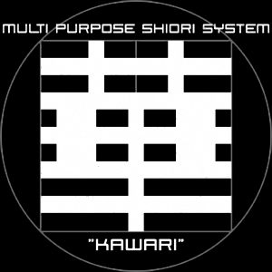

「ですくとっぷ戦線ニ異常アリ」
"SOMETHING IS WRONG WITH THE DESKTOP FRONT."
予兆は見過ごされていた
An omen was overlooked.
かつてのデスクトップマスコットは
Once DESKTOP MASCOT
プロジェクトなかばで放棄され
was abandoned in the middle of the project,
辺境のゴーストの記憶は
and memory of the ghost of a frontier
夢物語として消え去った
disappeared as a fantastic story.
西暦2001年
A.D.2001
互換SHIORIの発見が
Discovery of a compatible SHIORI system
すべてを変える
changes all.
見捨てられた電脳空間は
The forsaken cyberspace revived
ゴーストの乱舞する動乱の舞台として
from historical darkness as a stage of disturbance
歴史の闇から甦り
which a GHOST dances all around.
よどむ時の流れをかき乱す
and, It disturbs stagnant the passage of time.
やがて一連の抗争は
Soon, a series of struggle became the big turning point
「さくら継承戦争」と呼ばれるようになり
which comes to be called "SAKURA SUCCESSION WAR"
その後の人類の命運を決する
and settles subsequent
一大転機になった
human being's fate.